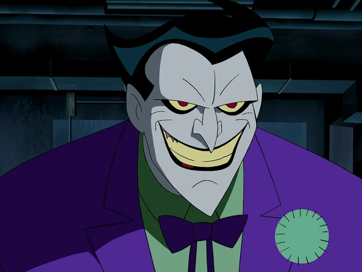
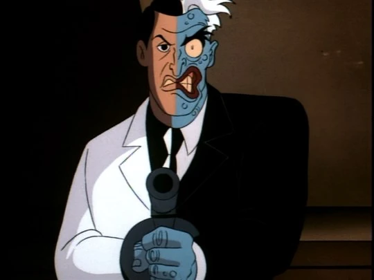
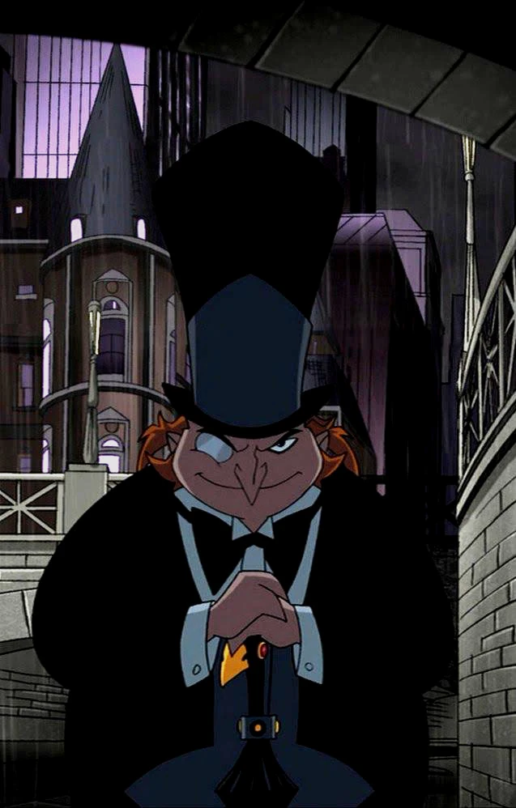
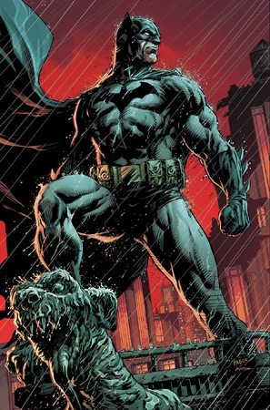

Biography
Batman, also known as the Dark Knight, is the alter ego of Bruce Wayne, a wealthy businessman from Gotham City. After witnessing the tragic murder of his parents as a child, Bruce dedicated his life to fighting crime and protecting Gotham. With no superpowers, Batman relies on his intellect, detective skills, and physical prowess to fight against villains.
Fun Facts
- Batman follows a strict no-kill code, believing that justice should be served without taking the lives of criminals.
- He fights foes without superhuman powers, relying on his peak physical abilities, intellect, and an array of high-tech gadgets to defeat even the most dangerous enemies.
- Known as "The World's Greatest Detective," Batman's investigative skills and deductive reasoning are unmatched, allowing him to solve crimes and outsmart even the most cunning of villains.
Enemy List

The Joker
Batman’s archnemesis, a madman with a twisted sense of humor.

Two-Face
A former district attorney turned villain with a dual personality.

Penguin
A crime lord known for his umbrella weapons and underworld dealings.

Abilities
- Master detective with unparalleled intellect
- Expert in martial arts and hand-to-hand combat
- Uses advanced technology and gadgets
- Exceptional strategist and tactician
Important Relationships
- Alfred Pennyworth – Alfred is more than just a butler. He’s a father figure to Bruce Wayne, offering wisdom, emotional support, and care. Their bond is unbreakable, and Alfred’s role in Bruce’s life is irreplaceable.
- Robin (Dick Grayson) – Dick Grayson, the first Robin, shares a special bond with Batman. Taken in after the death of his parents, Dick became Bruce’s ward and partner in crime-fighting. As Robin, he was Batman’s right hand until he eventually became Nightwing.
- Batgirl (Barbara Gordon) – Batgirl, aka Barbara Gordon, is one of Batman’s most trusted allies. She’s a skilled fighter and detective, with a close working relationship with Batman in Gotham City. Her intelligence and fighting skills make her an invaluable member of the Bat-family.